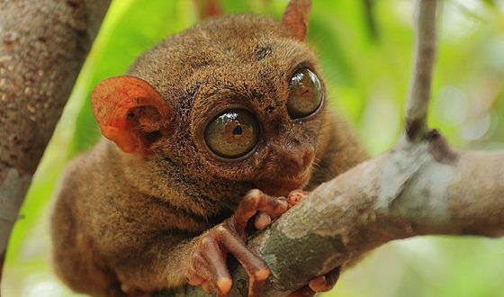

ТОП 5 рідкісних тварин в світі.
1. Білий Лев

В світі існує тільки 300 особин. Вони мешкають в спеціальних заповідниках ПАР.Довжина білого лева складає більше трьох метрів, а вага може досягати 310 кілограмів.
2. Довгоп'ят
Довгоп'ят відноситься до приматів. Довгопяти існували на планеті ще 55 мільйонів років тому. Вони мають досить цікаву зовнішність, великі милі очі, а також мімічні зморшки, які дозволяють міняти вираз обличчя залежно від ситуації. Живуть довгопяти в лісах Філіппінських островів. Більшу частину життя вони проводять на деревах. У нічний час доби виходять полювати в пошуку здобичі. Тривалість життя: до 12 років.
3. Гігантська м'якотіла черепаха
Унікальний вид черепахи, який має лічену кількість представників. Водиться вона виключно в прісній воді, а вага сягає двох сотень кілограмів. Панциру у черепахи немає, а тіло покрите м'якою шкірою, що не властиво більшості черепах у світі. Поширені в Африці, Азії і в Північній Америці. Більшість видів — хижаки, що живляться водними безхребетними, рибою. Великі особини можуть нападати на пташенят водоплавних птахів, перепливаючих водойму дрібних ссавців. Деякі види всеїдні.
4. Амурський тигр
Знаходиться під загрозою повного зникнення і тому занесений в Червону Книгу. До кінця 1930-х рр. через інтенсивне знищення цього виду тигрів, а також скорочення місць його проживання на Землі залишилося близько 50 особин. Сьогодні амурський тигр живе на південному сході росії, його чисельність становить близько 400 особин.
5. Гавіал
Гавіал - один з найрідкісніших видів крокодилів. До 1970 році вважалося, що цей вид повністю зник, однак через деякий час завдяки штучному розведенню їх популяція виросла до 1,5 тис. особин. Сьогодні ці рептилії часто гинуть в рибальських сітках: самців знищують через нарости на носі, які вважаються афродизіаками.
Перейти до наступної тварини